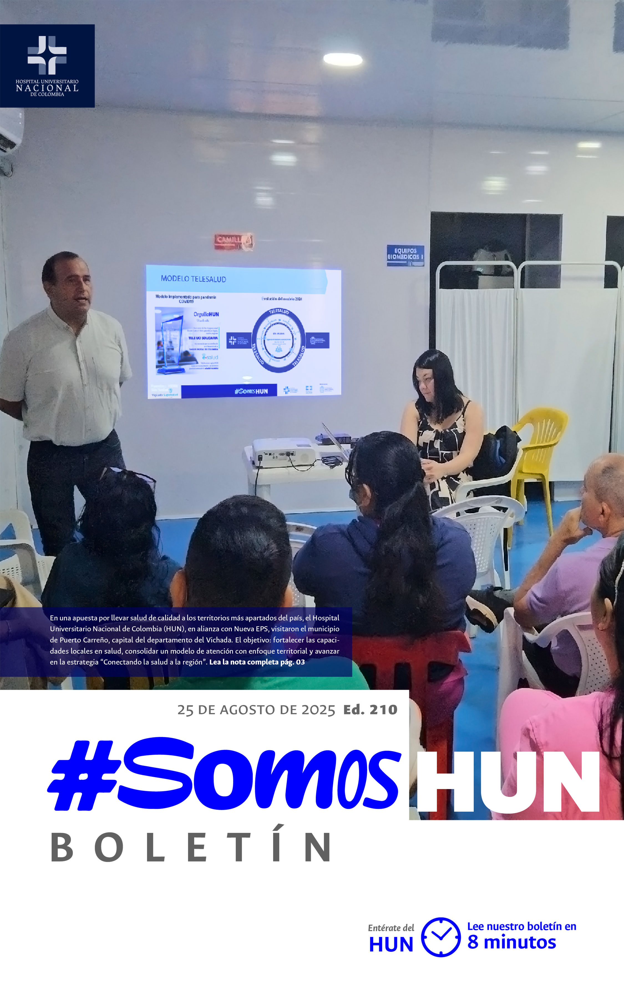
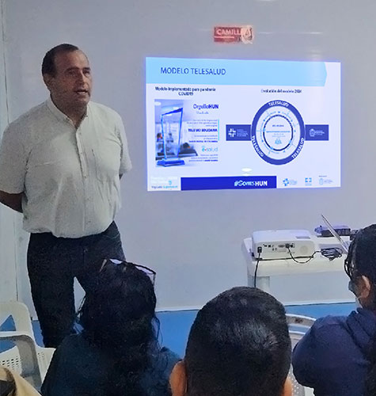
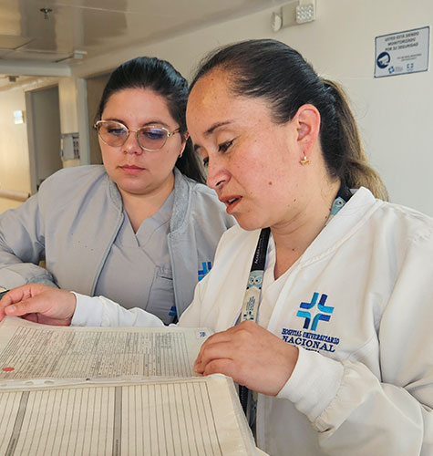
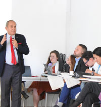
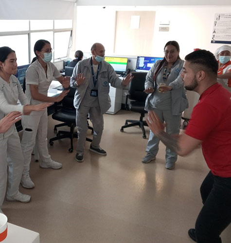
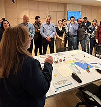
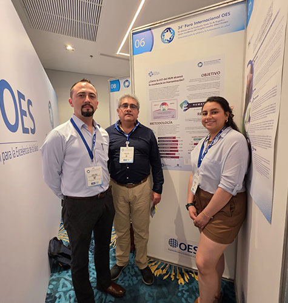

Ver todos los boletines
HUN visita Puerto Carreño para fortalecer capacidades territoriales en salud, en alianza con Nueva EPS
En una apuesta por llevar salud de calidad a los territorios más apartados del país, el Hospital Universitario Nacional de Colombia (HUN), en alianza con Nueva EPS, visitaron el municipio de Puerto Carreño, capital del departamento del Vichada. El objetivo: fortalecer las capacidades locales en salud, consolidar un modelo de atención con enfoque territorial y avanzar en la estrategia “Conectando la salud a la región” .Leer más

Salud pública en acción: el compromiso del HUN con la prevención y la equidad en salud
El Hospital Universitario Nacional de Colombia (HUN) se ha consolidado en sus nueve años de historia como un referente en atención de alta complejidad y en docencia, pero también como un actor clave en el fortalecimiento de la salud pública en Colombia. Desde la Oficina de Salud Pública, liderada por la enfermera Diana Bejarano, se han desarrollado estrategias que trascienden la atención individual del paciente para impactar en la prevención, la promoción y la transformación de los determinantes sociales de la salud.Leer más

El HUN avanza en la publicación de nuevos Estándares Clínicos Basados en la Evidencia
El Hospital Universitario Nacional de Colombia (HUN) continúa consolidándose como referente en investigación y práctica clínica segura con la publicación de sus Estándares Clínicos Basados en la Evidencia (ECBE). Hasta la fecha, la institución ha publicado 42 estándares correspondientes al ciclo 1 y 2, que han marcado un hito en la forma de orientar las decisiones clínicas dentro del hospital y para otras instituciones del país.Leer más

Semana de la salud y seguridad en el trabajo
Con el compromiso de promover ambientes laborales seguros y saludables, el Hospital Universitario Nacional de Colombia (HUN) realizará la Semana de Seguridad y Salud en el Trabajo 2025, un espacio académico y participativo que busca fortalecer la cultura del autocuidado, la prevención de riesgos y el bienestar integral de toda la comunidad laboral.Leer más

Avanza el programa de liderazgo HUN
Creemos que la innovación no solo se aplica a la atención en salud, sino también al fortalecimiento de nuestros equipos de liderazgo.Leer más

HUN presente en el 34 foro internacional de la OES
En este importante escenario para conectar con líderes y expertos que impulsan la transformación en la atención en salud desde la excelencia, la innovación y el compromiso humano, presentamos el póster ¿Cómo la UCI de nuestro hospital alcanzó la excelencia en humanización? una experiencia internacional de calidad en la atención.Leer más